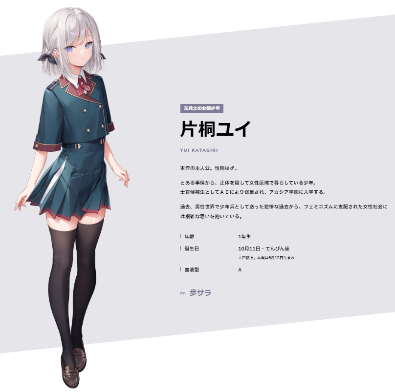

千早！！！
@neko0202002
RT @trader_R18: 【誕生日】
本日8/15は、Orthros(@Orthrossoft)様より
#オトメき
主人公・片桐ユイくん♂の(本当の)誕生日です！ おめでとう～！
未履修の方はぜひプレイをご検討ください
ユイくんの魅力は、可愛い×ついてるのダブルコンボだけ…

トレーダーＲ１８
@trader_R18
【誕生日】
本日8/15は、Orthros(@Orthrossoft)様より
#オトメき
主人公・片桐ユイくん♂の(本当の)誕生日です！ おめでとう～！
未履修の方はぜひプレイをご検討ください
ユイくんの魅力は、可愛い×ついてるのダブルコンボだけじゃありません！？
#片桐ユイ生誕祭2025 https://t.co/VC4tQIURVI